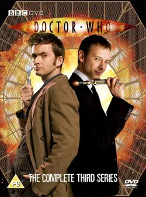

The genetics
The episode is built around genetic hybridisation. Dalek Sec, already fused with a human body, wants to save his dying species by blending Dalek and human DNA into a new race with Dalek intelligence and human emotions, freed from the obsession with supremacy. His fellow Daleks see this as a betrayal of Dalek purity and turn the project into an army of pure Dalek minds in human bodies, but the Doctor's Time Lord DNA, transferred by the lightning strike, gives the hybrids free will. The story also shows the cost of Dalek experimentation on humans, the subjects are brain-dead and the "pig-slave" Laszlo can only be stabilised, and it ends with Caan exterminating the hybrids, which the Doctor calls genocide. Sec is a tragic figure who evolves towards compassion, while the purists are villains; the genetics is entirely fantastical.
How genetics is portrayed
- Overall portrayal of genetics
- mixed Genetic hybridisation is a hope for the Daleks' redemption in Sec's and the Doctor's hands and a weapon in the purists' hands, and the episode sets these against each other, though it ends with genocide.
- Outcome of the genetic intervention
- negative The hybridisation uses human bodies, is hijacked to make a Dalek army, and ends with the hybrids exterminated and Laszlo permanently altered, though the hybrids briefly turn on their masters.
- Dalek Sec
- ambivalent Aim: ideological, benevolent (mixed). Sec, of the Cult of Skaro, creates a Dalek-human race to save the Daleks and rid them of their supremacism, using brain-dead humans as material; the episode turns him from villain into a tragic figure who dies saving the Doctor.
- Daleks Caan, Jast and Thay
- villain Aim: ideological, military (negative). The purist Daleks seize the project, replace the human DNA with pure Dalek DNA to create an obedient army, and Caan exterminates the hybrids when they rebel.
- The Doctor
- hero Aim: benevolent (positive). The Doctor helps prepare the gene solution to give the subjects a future, his Time Lord DNA gives the hybrids free will, and he stabilises Laszlo's condition.
The story
In New York in 1930, concluding the story begun in "Daleks in Manhattan", the Doctor confronts the Cult of Skaro, whose leader Dalek Sec has merged with a human to become a Dalek-human hybrid. In their laboratory in the Empire State Building, Sec plans a new race by combining Dalek and human DNA in brain-dead human bodies, powered by gamma radiation from a solar flare channelled through the building's mast. The Doctor agrees to help, since the subjects cannot otherwise be saved, and offers to take the new race to another planet. But Daleks Caan, Jast and Thay mutiny, chain Sec as a traitor and switch the gene solution to pure Dalek DNA. The Doctor clings to the mast as the lightning strikes and the hybrids awaken. Sec dies shielding the Doctor; the hybrids, who have absorbed the Doctor's Time Lord DNA, question their orders and kill Jast and Thay, before Caan kills them all and escapes.